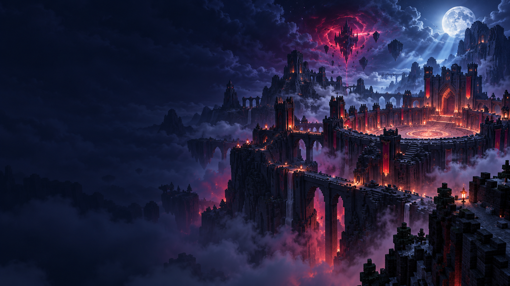

Guerra de Clanes 7
Perfil cliente de GDC7, aislado de cada evento.
Esperando un manifiesto de instalación verificado.

Elegí un evento
Eventos
Cada evento conserva su propia instancia y sus propios requisitos.
Vestidor
Para jugar, iniciá sesión en Prism con una cuenta Microsoft que tenga Minecraft Java.
Perfil sin conectar
Conectá una cuenta oficial para consultar el perfil de Minecraft.
- Perfil
- No disponible
- Sesión protegida
- Comprobando almacenamiento
- Skin
- Vista previa no disponible
Vincular perfil oficial al launcher (opcional)
Este vínculo muestra y verifica tu perfil en el launcher. La cuenta que usa Jugar se administra en Prism; iniciá sesión allí con la misma cuenta Microsoft Premium.
Cuenta Premium para jugar
Iniciá sesión en Prism con tu cuenta Microsoft con licencia de Minecraft Java. No se admite iniciar el juego escribiendo solo un nombre.
Prism permanece cerrado.
Ajustes
Preferencias y carpetas guardadas en este equipo.
Carpetas de instancia
Cada ruta pertenece a un único evento. Las carpetas no se copian entre perfiles.